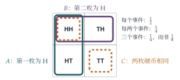

STEP III 2021，第 12 题
继续之前，请先阅读题目（原题为英文）。题目载于 OCR 提供下载的 2021 年 STEP 试卷（zip 文件）内的 STEP III 试卷： www.ocr.org.uk/Images/696588-2021-past-papers.zip
引子
玩家 \(1\) 和玩家 \(2\) 掷出相同的点数。这能告诉你玩家 \(2\) 和玩家 \(3\) 是否掷出相同点数吗？出人意料的是，不能：这两个事件是独立（independent）的。玩家 \(1\) 和玩家 \(3\) 的情况也一样。但如果 \(1\) 与 \(2\) 相同，而 \(2\) 又与 \(3\) 相同，那么 \(1\) 必定与 \(3\) 相同。三个事件，每两个之间都独立，合起来却不独立。
两两独立（pairwise independence）比完全独立弱，而这个差别至关重要。就方差（variance）而言，两两独立已经足够，本题正是利用了这一点。但在许多其他用途上，这并不足够。电脑科学家会刻意使用两两独立的随机数，因为产生它们的成本远低于产生完全独立的随机数，而对许多算法来说已经够用。
动笔之前
\(\mathrm{P}(X_{12} = 1)\) 是多少？\(\mathrm{P}(X_{12} = 1 \text{ 及 } X_{23} = 1)\) 又是多少？
无论玩家 \(1\) 掷出甚么，玩家 \(2\) 与之相同的概率都是 \(\frac16\)。\(X_{12} = 1\) 和 \(X_{23} = 1\) 同时成立，即三人掷出相同的点数：概率为 \(\frac{6}{216} = \frac{1}{36}\)。
逐步解题
阶段 1 两两独立
由于 \(\mathrm{P}(X_{12} = 1, X_{23} = 1) = \frac{1}{36} = \frac16 \cdot \frac16 = \mathrm{P}(X_{12} = 1)\mathrm{P}(X_{23} = 1)\)，而每个变量只取两个值，所以 \(X_{12}\) 与 \(X_{23}\) 独立。（对于只取两个值的变量，联合分布表中的一格便决定了其余各格；练习 1 会把这一点说清楚。）没有共同玩家的两对，例如 \(X_{12}\) 与 \(X_{34}\)，显然是独立的。因此所有 \(X_{ij}\) 都两两独立。
阶段 2 得分的平均值与方差
得分为 \(S = \sum_{i<j}X_{ij}\)，是 \(\binom n2\) 个变量之和，每个变量的平均值为 \(\frac16\)，方差为 \(\frac16 \cdot \frac56 = \frac{5}{36}\)。期望值（expectation）总是可以相加的，所以 \(\mathrm{E}(S) = \frac16\binom n2\)。
和的方差在甚么时候等于方差之和？
和的方差等于方差之和，再加上协方差（covariance）之和的两倍，而独立的一对变量协方差为零。两两独立已经足够： \[\mathrm{E}(S) = \frac{n(n - 1)}{12}, \qquad \mathrm{Var}(S) = \frac{5}{36}\binom n2 = \frac{5n(n - 1)}{72}.\]
阶段 3 方差公式
若各 \(Y_i\) 的平均值为零，则 \(\mathrm{Var}(\sum Y_i) = \mathrm{E}\bigl((\sum Y_i)^2\bigr)\)，把平方展开后，每个 \(Y_i^2\) 出现一次，每个乘积 \(Y_iY_j\)（其中 \(i < j\)）出现两次。取期望值便得到公式。■
阶段 4 奇偶游戏
\(\mathrm{E}(Z_{12})\) 是多少？\(Z_{12}Z_{23}\) 可以取哪些值？它在甚么时候不等于零？
\(Z_{12} = 1\) 的概率为 \(\frac{3}{36} = \frac{1}{12}\)（两人都掷出 \(2\)、都掷出 \(4\) 或都掷出 \(6\)），而取值 \(-1\) 的概率为 \(\frac{1}{12}\)；所以 \(\mathrm{E}(Z_{12}) = 0\) 而 \(\mathrm{E}(Z_{12}^2) = \frac16\)。
只有当三位玩家都掷出相同点数时，才有 \(Z_{12}Z_{23} \neq 0\)，而此时 \(Z_{12} = Z_{23}\)（同为 \(+1\) 或同为 \(-1\)），所以乘积为 \(1\)。因此 \(\mathrm{E}(Z_{12}Z_{23}) = \frac{1}{36}\)，这并不等于 \(\mathrm{E}(Z_{12})\mathrm{E}(Z_{23}) = 0\)：它们并不独立。■
（更直接的看法是，\(\mathrm{P}(Z_{12} = 1, Z_{23} = -1) = 0\)，而每个事件单独发生的概率都是 \(\frac{1}{12}\)。）
阶段 5 方差
总得分 \(T = \sum Z_{ij}\) 的平均值为 \(0\)。根据第 (ii) 部分，\(\mathrm{Var}(T)\) 等于 \(\binom n2 \cdot \frac16\)，再加上 \(\mathrm{E}(Z_{ij}Z_{kl})\) 对所有“两对玩家”的组合求和后的两倍。没有共同玩家的两对，贡献为 \(0\)（它们独立，而且各自的平均值为零）。恰好有一位共同玩家的两对，每组贡献 \(\frac{1}{36}\)，而这样的组合共有 \(n\binom{n-1}{2}\) 个（先选共同的玩家，再选另外两人）。所以 \[\begin{aligned} \mathrm{Var}(T) &= \frac{n(n - 1)}{12} + 2 \cdot \frac{1}{36} \cdot \frac{n(n - 1)(n - 2)}{2} \\ &= \frac{n(n - 1)}{36}\bigl(3 + (n - 2)\bigr) = \frac{n(n^2 - 1)}{36}. \qed \end{aligned}\]

回顾
指示变量（indicator variables）。把得分写成指示变量之和，一切便化为对一对对玩家的考虑。
方差只需要看成对的变量。和的方差只取决于两两之间的协方差，所以两两独立已足以令方差相加。
独立性要验证，不要假设。两个看似相同的游戏，却有不同的相依结构。
背后的数学
多个事件的独立性
如果对每一个子族，交集的概率都等于各概率之积，则称事件 \(A_1, \ldots, A_n\) 独立。对三个事件来说，这意味着四个条件：三个是关于每一对的，另一个是 \(\mathrm{P}(A \cap B \cap C) = \mathrm{P}(A)\mathrm{P}(B)\mathrm{P}(C)\)。伯恩斯坦（Sergei Bernstein）在 1920 年代提出图 12.4.1 中的例子，说明两两之间的条件并不能推出三者的条件。（反过来，单凭三者的条件也不能推出两两之间的条件。）题目中“点数相同”的事件 \(X_{12}\)、\(X_{23}\)、\(X_{13}\) 与伯恩斯坦的硬币如出一辙。
不相关不等于独立
协方差为零，即 \(\mathrm{E}(XY) = \mathrm{E}(X)\mathrm{E}(Y)\)，是比独立更弱的条件，称为不相关（uncorrelated）。STEP III 2000 Q14（见练习）说明，对于只取两个值的变量，这两个概念是一致的，但取三个值时则不然。一个简单的例子：设 \(X\) 在 \(\{-1, 0, 1\}\) 上均匀分布，并设 \(Y = X^2\)。那么 \(\mathrm{E}(XY) = \mathrm{E}(X^3) = 0 = \mathrm{E}(X)\mathrm{E}(Y)\)，然而 \(Y\) 完全由 \(X\) 决定。协方差只量度线性关联。
对电脑来说，产生随机数的成本很高。1979 年，Larry Carter 和 Mark Wegman 证明，对许多算法而言，例如把数据储存在伪随机位置的杂凑（hashing），两两独立的随机选择与完全独立的同样有效。两两独立的数值可以用极低的成本产生：例如，取随机的 \(a\) 和 \(b\)，则 \(a + bk \pmod p\) 对 \(k = 0, 1, \ldots, p - 1\) 给出 \(p\) 个数值，其中任何两个都是独立的。本题的方差计算正是它行得通的原因：切比雪夫（Chebyshev）不等式只需要方差，而方差只需要看成对的变量。
思维技巧
要求一个计数的平均值和方差，可把它写成指示变量之和，每一个可能被数到的对象对应一个指示变量。求平均值只需要考虑单个指示变量；求方差则需要考虑成对的指示变量。
这是概率论中最有用的技巧之一，早在 第 9.8 节 已经出现过。在大学里，随机图、算法和统计检验的分析都以它为基础。
延伸练习
两个值。试做 STEP III 2000，第 14 题。该题证明，对于各自只取两个值的随机变量，\(\mathrm{E}(XY) = \mathrm{E}(X)\mathrm{E}(Y)\) 必然推出独立，并要求给出一个取三个值的反例。
人数更多的队伍。在第 (i) 部分中取 \(n = 7\)，求得分的平均值和标准差，并把例子中的得分 \(7\) 与它们比较。
再谈生日。利用指示变量，求 \(k\) 个人当中生日相同的人数对的平均值和方差（第 9.9 节）。这些指示变量是否两两独立？
三者成立但两两不独立。找出三个事件，每个的概率都是 \(\frac12\)，满足 \(\mathrm{P}(A \cap B \cap C) = \frac18\)，但并非两两独立。
延伸阅读
Geoffrey Grimmett & David Stirzaker, Probability and Random Processes（Oxford University Press），开首几章讨论独立性。
Michael Mitzenmacher & Eli Upfal, Probability and Computing（Cambridge University Press）。两两独立及其在算法中的应用。
Joseph Blitzstein & Jessica Hwang, Introduction to Probability（CRC Press；可于网上免费阅读），关于指示变量与协方差。